File: 000900.gt.txt (if the image is defective, simply delete all Arabic text and the line will be excluded)
والمعاملة، ومسند مصره.
File: 000901.gt.txt (if the image is defective, simply delete all Arabic text and the line will be excluded)
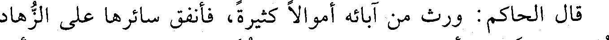
قال الحاكم : ورث من آبائه أموالا كثيرة، فأنفق سائرها على الزهاد
File: 000902.gt.txt (if the image is defective, simply delete all Arabic text and the line will be excluded)
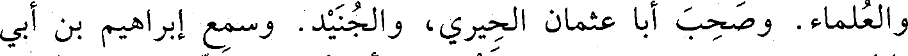
والعلماء. وصحب أبا عثمان الحيري، والجنيد. وسمع إبراهيم بن أبي
File: 000903.gt.txt (if the image is defective, simply delete all Arabic text and the line will be excluded)
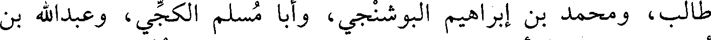
طالب، ومحمد بن إبراهيم البوشنجي، وأبا مسلم الكجي، وعبدالله بن
File: 000904.gt.txt (if the image is defective, simply delete all Arabic text and the line will be excluded)
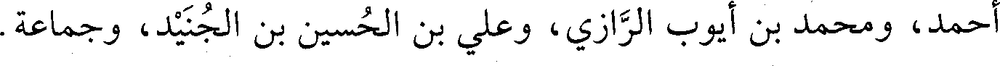
أحمد، ومحمد بن أيوب الرازي، وعلي بن الحسين بن الجنيد، وجماعة.
File: 000905.gt.txt (if the image is defective, simply delete all Arabic text and the line will be excluded)
237
File: 000906.gt.txt (if the image is defective, simply delete all Arabic text and the line will be excluded)
مجاشع، ومحمد بن إسحاق بن خزيمة، وأبي يعلى الموصلي، والهيثم بن
File: 000907.gt.txt (if the image is defective, simply delete all Arabic text and the line will be excluded)
خلف، وأحمد بن عمرو البزار. وعنه الحاكم، وأبو الفضل الجارودي،
File: 000908.gt.txt (if the image is defective, simply delete all Arabic text and the line will be excluded)
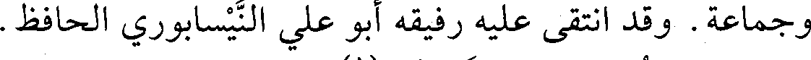
وجماعة. وقد انتقى عليه رفيقه أبو علي النيسابوري الحافظ.
File: 000909.gt.txt (if the image is defective, simply delete all Arabic text and the line will be excluded)
وهو جرجاني نزل نيسابور(1).
File: 000910.gt.txt (if the image is defective, simply delete all Arabic text and the line will be excluded)
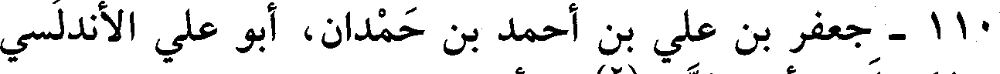
110 - جعفر بن علي بن أحمد بن حمدان، أبو علي الأندلسي
File: 000911.gt.txt (if the image is defective, simply delete all Arabic text and the line will be excluded)
صاحب المسيلة، وأمير الزاب(2) من أعمال إفريقية.
File: 000912.gt.txt (if the image is defective, simply delete all Arabic text and the line will be excluded)
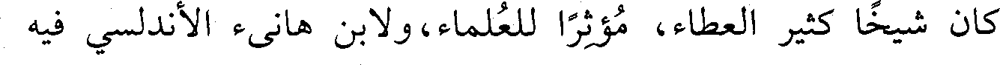
كان شيخا كثير العطاء، مؤثرا للعلماء، ولابن هانئ الأندلسي فيه
File: 000913.gt.txt (if the image is defective, simply delete all Arabic text and the line will be excluded)
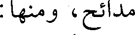
مدائح، ومنها :
File: 000914.gt.txt (if the image is defective, simply delete all Arabic text and the line will be excluded)
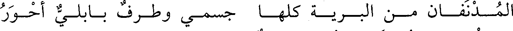
المـدنفـان مـن البـريـة كلهـا جسمـي وطـرف بـابلـي أحـور
File: 000915.gt.txt (if the image is defective, simply delete all Arabic text and the line will be excluded)
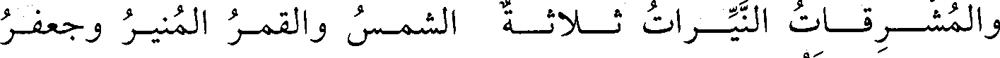
والمشـرقـات النيـرات ثـلاثـة الشمـس والقمـر المنيـر وجعفـر
File: 000916.gt.txt (if the image is defective, simply delete all Arabic text and the line will be excluded)
والمسيلة: مدينة من أعمال الزاب.
File: 000917.gt.txt (if the image is defective, simply delete all Arabic text and the line will be excluded)
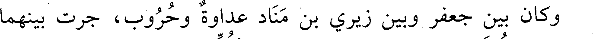
وكان بين جعفر وبين زيري بن مناد عداوة وحروب، جرت بينهما
File: 000918.gt.txt (if the image is defective, simply delete all Arabic text and the line will be excluded)
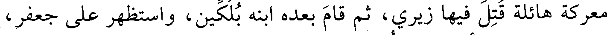
معركة هائلة قتل فيها زيري، ثم قام بعده ابنه بلكين، واستظهر على جعفر،
File: 000919.gt.txt (if the image is defective, simply delete all Arabic text and the line will be excluded)
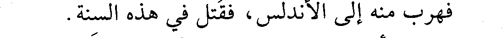
فهرب منه إلى الأندلس، فقتل في هذه السنة.
File: 000920.gt.txt (if the image is defective, simply delete all Arabic text and the line will be excluded)
وأبوه علي هو الذي بنى المسيلة. وزيري : هو جد المعز بن
File: 000921.gt.txt (if the image is defective, simply delete all Arabic text and the line will be excluded)
باديس(3).
File: 000922.gt.txt (if the image is defective, simply delete all Arabic text and the line will be excluded)
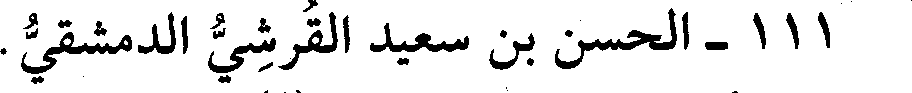
111 - الحسن بن سعيد القرشي الدمشقي.
File: 000923.gt.txt (if the image is defective, simply delete all Arabic text and the line will be excluded)
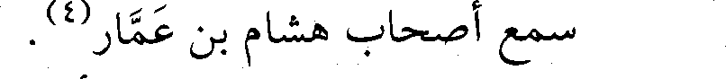
سمع أصحاب هشام بن عمار(4).
File: 000924.gt.txt (if the image is defective, simply delete all Arabic text and the line will be excluded)
112 - الحسن بن علي بن أبي السلاسل، أبو القاسم البجلي.
File: 000925.gt.txt (if the image is defective, simply delete all Arabic text and the line will be excluded)
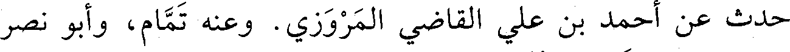
حدث عن أحمد بن علي القاضي المروزي. وعنه تمام، وأبو نصر
File: 000926.gt.txt (if the image is defective, simply delete all Arabic text and the line will be excluded)
المري، ومحمد بن عوف المزني، توفي في رجب.
File: 000927.gt.txt (if the image is defective, simply delete all Arabic text and the line will be excluded)
113 - سبكتكين الأمير، حاجب معز الدولة بن بويه.
File: 000928.gt.txt (if the image is defective, simply delete all Arabic text and the line will be excluded)
227
File: 000929.gt.txt (if the image is defective, simply delete all Arabic text and the line will be excluded)
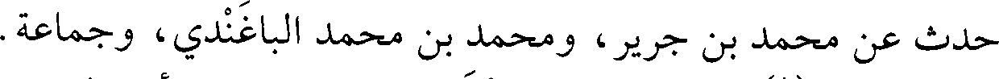
حدث عن محمد بن جرير، ومحمد بن محمد الباغندي، وجماعة.
To Save: `Ctrl+s`, make sure to choose `Webpage, complete`!